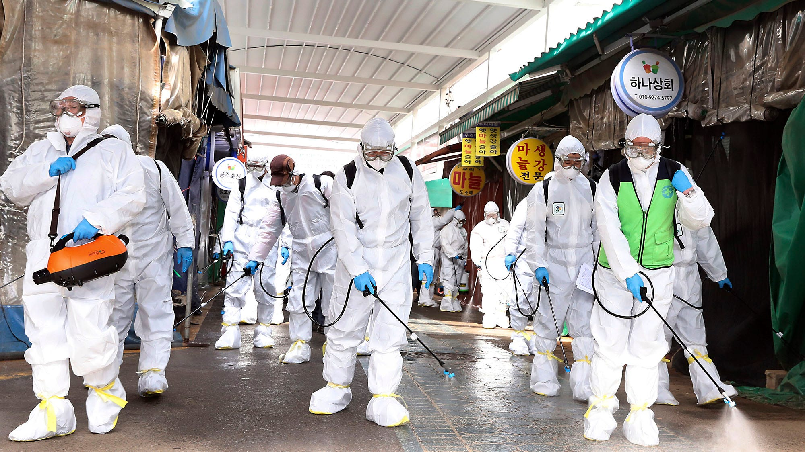
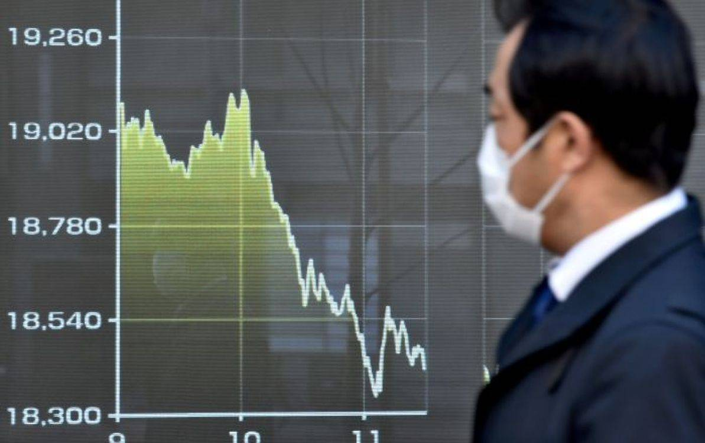

Виды ЧС
Природные ЧС
Причины:
- Природные явления: Землетрясения, вулканические извержения, ураганы, наводнения, лесные пожары и другие природные катастрофы могут быть причиной природных ЧС.
- Человеческая деятельность: Недальновидное использование природных ресурсов, неэффективное управление землепользованием, антропогенное загрязнение окружающей среды и изменение климата также могут способствовать возникновению ЧС.
- Техногенные катастрофы: Взрывы, аварии на предприятиях, разливы опасных веществ и другие несчастные случаи, связанные с человеческой технологией, могут вызвать природные ЧС.
Последствия
-
Человеческие жертвы и пострадавшие: Природные ЧС могут приводить к гибели и травмам людей, что является самым серьезным последствием.
-
Ущерб для инфраструктуры: Землетрясения, наводнения и другие катастрофы могут разрушить дома, дороги, мосты, электростанции и другие объекты инфраструктуры, что приводит к экономическим потерям и нарушению обычного функционирования общества.
-
Потеря биоразнообразия и экосистем: Лесные пожары, наводнения и другие природные бедствия могут уничтожать экосистемы и приводить к потере жизненных сред для различных видов животных и растений.
-
Экологические последствия: Выбросы опасных веществ в окружающую среду и разливы нефти или химических веществ могут загрязнять воду, почву и воздух, что приводит к длительным экологическим проблемам.
-
Социальные и психологические последствия: Последствия природных ЧС могут оказывать серьезное воздействие на психическое состояние людей, вызывая стресс, тревогу и депрессию, а также приводя к социальным конфликтам и напряженности.
Техногенные ЧС
Причины:
- Аварии на промышленных объектах: Нарушения в работе промышленных предприятий, таких как химические заводы, электростанции, ядерные реакторы или нефтеперерабатывающие заводы, могут приводить к авариям и выбросам опасных веществ.
- Человеческий фактор: Ошибки персонала, недостаточное обучение, игнорирование правил безопасности и другие человеческие факторы могут стать причиной техногенных ЧС.
- Технические сбои и отказы оборудования: Неполадки в работе технического оборудования, отказы систем управления и контроля, а также обрывы энергоснабжения могут привести к авариям и несчастным случаям.
Последствия
-
Угроза жизни и здоровью людей: Выбросы опасных веществ, взрывы и пожары на промышленных объектах могут привести к пострадавшим и жертвам среди персонала и населения в окружающих территориях.
-
Загрязнение окружающей среды: Выбросы химических веществ, нефти, радиоактивных материалов и других опасных веществ могут привести к загрязнению почвы, воды и воздуха, что наносит ущерб экосистемам и здоровью людей.Экономические потери: Аварии на промышленных объектах могут привести к ущербу для экономики региона и страны, так как требуется значительное время и ресурсы на ликвидацию последствий, восстановление инфраструктуры и компенсацию убытков.Социальные последствия: Техногенные ЧС могут вызывать панику, тревогу и недоверие властям, а также приводить к социальным конфликтам и напряженности в обществе.Психологические последствия: Последствия техногенных ЧС могут оказывать серьезное воздействие на психическое состояние людей, вызывая стресс, тревогу и депрессию, особенно у тех, кто прямо столкнулся с катастрофой или потерял близких.
Биологические ЧС
Причины:
- Эпидемии и пандемии: Распространение инфекционных болезней, таких как грипп, вирус иммунодефицита человека (ВИЧ), гепатит, туберкулез и другие, может вызывать массовые заболевания и смерти.
- Биотерроризм: Атаки с использованием биологических агентов, таких как антрацит, сибирская язва, холера или другие патогены, могут быть намеренно осуществлены для нанесения вреда населению и вызывания паники.
- Появление новых заболеваний: Мутации вирусов или появление новых патогенов могут привести к возникновению новых болезней или распространению уже известных в новых областях.
Последствия
-
Заболеваемость и смертность: Биологические ЧС могут приводить к высокой заболеваемости и смертности среди населения, особенно если болезнь является высоко заразной и/или имеет высокую смертельность.
-
Экономические потери: Распространение инфекционных болезней может привести к значительным экономическим потерям из-за потери рабочей силы, закрытия предприятий и торговых точек, а также увеличения затрат на медицинское обслуживание.
-
Паника и социальные последствия: Биологические ЧС могут вызывать панику среди населения, приводить к социальной изоляции, стигматизации и напряженности в обществе.
-
Медицинская и гуманитарная нагрузка: Большое количество заболевших может создать большую нагрузку на медицинские учреждения и гуманитарные организации, что может вызвать нехватку медикаментов, медицинского оборудования и персонала.
-
Потеря доверия к властям и общественным институтам: Неправильное реагирование на биологические ЧС или недостаточная информированность общества может привести к потере доверия к властям и другим общественным институтам.
Социальные ЧС
Причины:
- Политические конфликты и войны: Вооруженные конфликты, гражданские войны и международные конфликты могут привести к социальным ЧС, таким как вынужденные переселения, гуманитарные кризисы и потерями жизней.
- Экономические кризисы: Финансовые кризисы, обвалы рынков, безработица и инфляция могут вызывать социальные ЧС в виде бедности, социального неравенства, преступности и безнадежности.
- Природные бедствия: Наводнения, землетрясения, лесные пожары и другие природные катастрофы могут привести к социальным ЧС, таким как вынужденные эвакуации, потеря домов и жизней, а также разрушение инфраструктуры.
- Эпидемии и пандемии: Вспышки инфекционных болезней, таких как вирусные эпидемии и пандемии, могут вызывать социальные ЧС из-за потери жизней, страха перед заражением, ограничений на передвижение и деятельность, а также экономических последствий.
-
Гуманитарные кризисы: Социальные ЧС могут привести к гуманитарным кризисам, когда люди теряют доступ к пище, воде, медицинской помощи и жилью из-за войн, бедствий или экономических трудностей.
-
Миграция и беженцы: Социальные ЧС могут вызывать массовую миграцию и создавать потоки беженцев, что ставит перед странами-приемниками сложные задачи по обеспечению убежища, помощи и интеграции этих людей.
-
Социальные расколы и напряженность: Социальные ЧС могут усиливать социальные расколы, конфликты и напряженность в обществе из-за борьбы за ресурсы, территорию, религиозные или этнические разногласия.
-
Потеря доверия к властям и институтам: Кризисные ситуации могут вызывать недоверие к властям и институтам, если они не справляются с ситуацией эффективно или принимают неэффективные или несправедливые меры.
-
Психологические последствия: Социальные ЧС могут оказывать серьезное воздействие на психическое состояние людей, вызывая стресс, тревогу, депрессию и другие психологические проблемы.